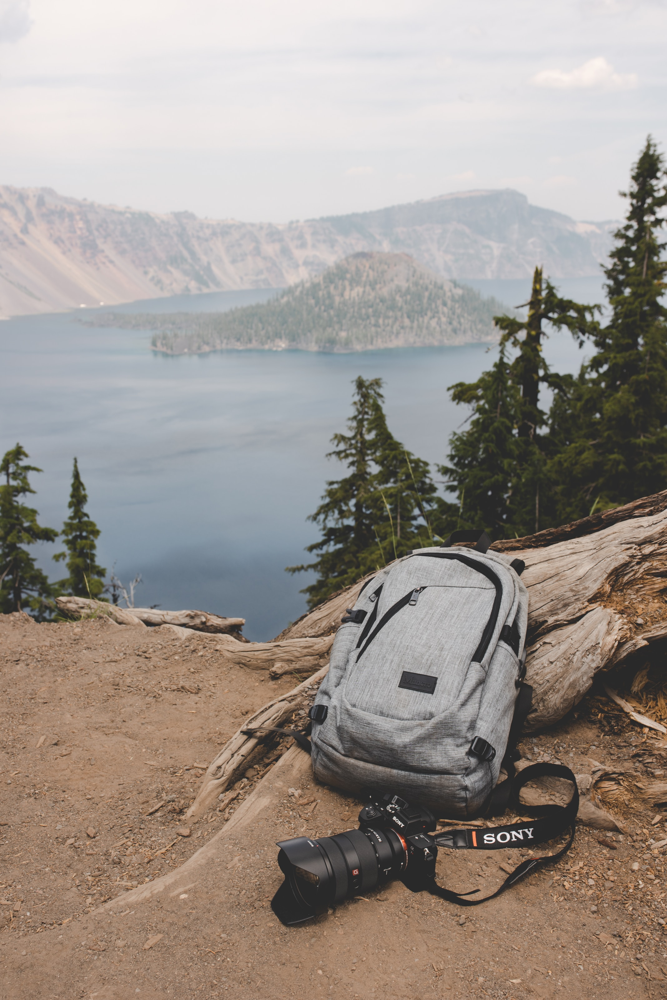

- Sony
- Camera
- a7Rmk3
Sony
>
My camera, Sony a7Rmk3 is the best Mirrorless camera.
나의 카메라, 소니 a7Rmk3(리뷰)는 최고의 미러리스 카메라다.
I like my camera1
I like my camera2
I like my camera3
I like my camera4
I like my camera5
I like my camera6

Spec
Year Introduce: 2017
Megapixels: 42.4
Total Pixels: 43.6
Sensor size: 35.9x24.0mm
Pixels Dimensions: 7952x5304